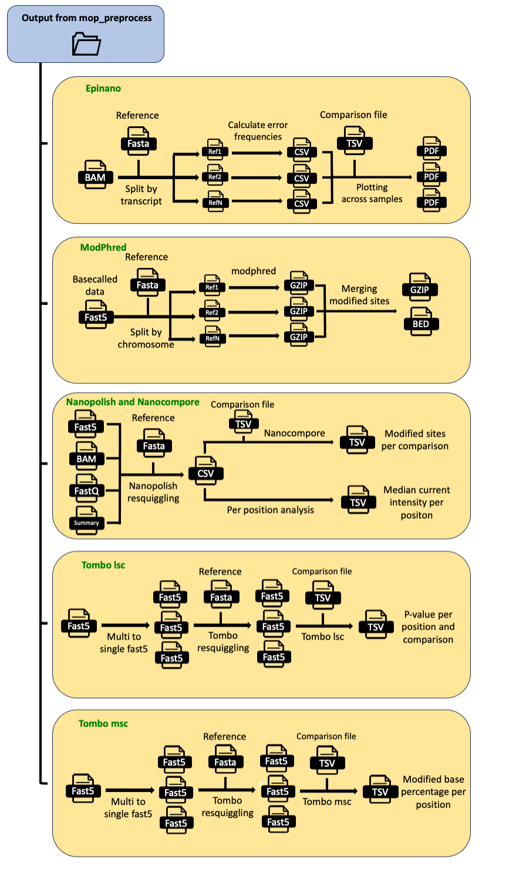
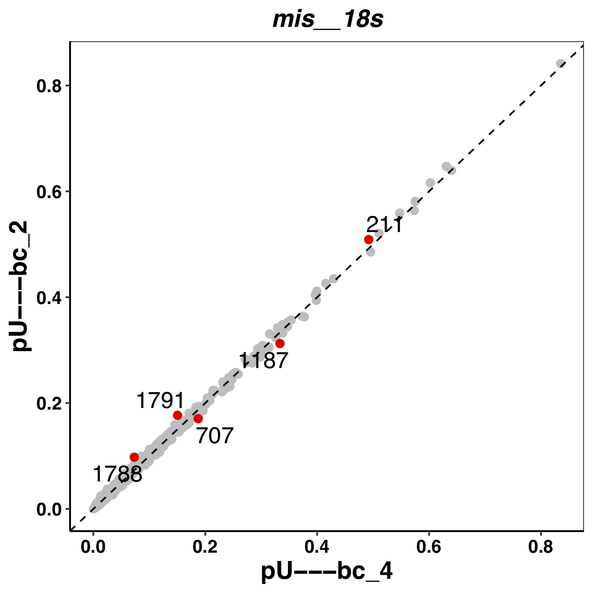

MOP_MOD
This pipeline takes as input the output from MOP_PREPROCESS: basecalled fast5 reads, together with their respective fastq files and unspliced alignments to the transcriptome . It runs four different RNA detection algorithms (Epinano, Nanopolish, Tombo and Nanocompore) and it outputs the predictions generated by each one of them as individual tab-delimited files.
{kind=link}

Input Parameters
The input parameters are stored in yaml files like the one represented here:
How to run the pipeline
Before launching the pipeline, user should:
Decide which containers to use - either docker or singularity [-with-docker / -with-singularity].
Fill in both params.yaml and tools_opt.tsv files.
Fill in comparison.tsv file - please see example below:
wt_1 ko_1
wt_2 ko_2
To launch the pipeline, please use the following command:
nextflow run mop_mod.nf -params-file params.yaml -with-singularity > log.txt
You can run the pipeline in the background adding the nextflow parameter -bg:
nextflow run mop_mod.nf -params-file params.yaml -with-singularity -bg > log.txt
You can change the parameters either by changing params.config file or by feeding the parameters via command line:
nextflow run mop_mod.nf -params-file params.yaml -with-singularity -bg --output test2 > log.txt
You can specify a different working directory with temporary files:
nextflow run mop_mod.nf -params-file params.yaml -with-singularity -bg -w /path/working_directory > log.txt
Results
Several folders are created by the pipeline within the output directory specified by the output parameter:
Epinano results are stored in epinano_flow directory. It contains two files per sample: one containing data at position level and the other, at 5-mer level. Different features frequencies as well as quality data are included in the results. See example below:
#Ref,pos,base,cov,q_mean,q_median,q_std,mis,ins,del
gene_A,2515,C,45497.0,5.36995,4.00000,3.97797,0.0822032221904741,0.18715519704595907,0.2058377475437941
gene_A,2516,A,45504.0,5.38207,4.00000,4.71619,0.17128164556962025,0.20497099156118143,0.07733386075949367
gene_A,2517,C,45529.0,6.92130,5.00000,5.04250,0.06165301236574491,0.1505633771881658,0.13540820136616222
gene_A,2518,A,45545.0,6.49821,5.00000,5.47485,0.10802503018992206,0.10855198155670216,0.2082775277198375
gene_A,2519,T,45557.0,6.51247,5.00000,4.81853,0.09386043857145993,0.14792457800118533,0.2033057488421099
Here an example of a plot from Epinano:
{kind=link}

Extracting modification encoded within BAM files (basecalling with modification)
Once the data has been basecalled with a modification-aware basecalling model, modification can be evaluated using modkit.
To run this software, in the params.yaml file you should specify modkit: "YES" and run the code below:
cd mop_mod
nextflow run mop_mod.nf -params-file params.yaml -with-singularity -bg > yourlog.txt
Modkit will generate a pileup file that can be filtered by keeping only the positions with a coverage higher than a value indicated in tools_opt.tsv.
`
modkit filtering ">= 25"
`
The resulting bedgraphs are then merged in a single table called union.bed